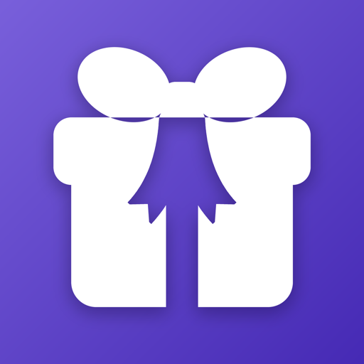

FiyonkSon güncelleme / Last updated: 2026-10-31
Fiyonk ("uygulama"), kişisel envanter ve hediyeleşme odaklı, arkadaşlar arası bir sosyal ağdır. Bu metin hangi verileri, neden, hangi hukuki dayanakla işlediğimizi, kimlerle paylaştığımızı ve haklarını açıklar (6698 sayılı KVKK ve GDPR).
Veri sorumlusu: Kuzey Çalışkan (bireysel geliştirici). İletişim: kept.giftory@gmail.com
Toplamadıklarımız: rehberin, telefon numaran, konumun, reklam kimliğin, ödeme bilgilerin. Fiyonk reklam veya analitik SDK'sı içermez. Yapıştırdığın mağaza bağlantısının önizlemesini sunucumuz çeker; cihazın mağazayla doğrudan iletişim kurmaz.
Profil, istek listesi ve hediye geçmişi bölümlerinin kimlere görüneceğini sen seçersin (herkese açık / sadece arkadaşlar / kapalı). Arkadaşların listende kimin ne ayırdığını veya havuz açtığını görür; sen görmezsin — sürpriz tasarım gereği korunur. Verilerini satmayız, reklam için paylaşmayız, üçüncü taraf analitik kullanmayız.
Verilerini bizim adımıza işleyen sağlayıcılar: Supabase (veritabanı, kimlik doğrulama, dosya depolama ve sunucu fonksiyonları; Avrupa Birliği, Frankfurt), Google Firebase (anonim çökme raporları ve Android bildirim iletimi), Apple (iOS bildirim iletimi). Bu sağlayıcılar verileri yalnızca hizmeti sağlamak için işler. Verilerin Avrupa Birliği'nde saklanır; yurt dışına bu aktarım KVKK m.9 kapsamında, uygulamaya giriş yaparken onayladığın bu metne dayanır.
Tüm aktarım TLS ile şifrelenir. Erişim veritabanı düzeyinde satır bazlı yetkilendirme ile sınırlıdır: bir içeriği yalnız sahibi ve sahibinin izin verdiği kişiler okuyabilir.
Verilerin hesabın açık olduğu sürece saklanır; anlar 24 saat sonra otomatik silinir. Hesabını uygulama içinden Ben → Ayarlar → Hesabı sil ile kalıcı olarak silebilirsin. Silindiğinde profilin, istek listen, arkadaşlıkların, fotoğrafların ve aldığın hediyeler silinir; arkadaşlarına verdiğin hediyeler onların geçmişinde anonimleştirilerek kalır. Yedek kopyalar en geç 30 gün içinde temizlenir.
Fiyonk 13 yaş altı için değildir. 13 yaşından küçük bir kullanıcı fark edersek hesabı ve verilerini sileriz.
Verilerine erişme, işlenip işlenmediğini öğrenme, düzeltme, silme, işlemenin kısıtlanmasını isteme, itiraz etme ve taşınabilirlik haklarına sahipsin. Başvurularını kept.giftory@gmail.com adresine iletebilirsin; en geç 30 gün içinde yanıtlarız. Kişisel Verileri Koruma Kurulu'na (AB'de ilgili denetim otoritesine) şikayet hakkın saklıdır.
Bu metni güncellediğimizde yukarıdaki tarihi değiştiririz; önemli değişiklikleri uygulama içinde duyururuz.
Sorular ve başvurular için: kept.giftory@gmail.com
Fiyonk is a personal-inventory social network centred on gifting between friends. This policy explains what data we process, why, on which legal basis, whom we share it with, and your rights (Turkish Data Protection Law no. 6698 "KVKK" and the GDPR).
Data controller: Kuzey Çalışkan (individual developer). Contact: kept.giftory@gmail.com
What we do not collect: your contacts, phone number, location, advertising identifier or payment details. Fiyonk contains no advertising or analytics SDK. Previews of the shop links you paste are fetched by our server; your device never contacts the shop directly.
You choose who sees each section of your profile, wishlist and gift history (public / friends only / off). Your friends can see who reserved or pooled for an item on your list; you cannot — the surprise is protected by design. We do not sell your data, share it for advertising, or use third-party analytics.
Providers that process data on our behalf: Supabase (database, authentication, file storage and server functions; European Union, Frankfurt), Google Firebase (anonymous crash reports and Android push delivery), Apple (iOS push delivery). They process data solely to provide the service. Your data is stored in the European Union; for users in Türkiye this transfer abroad rests on your acceptance of this policy when you sign in (KVKK art. 9).
All traffic is encrypted with TLS. Access is restricted at the database level with row-level authorisation: a piece of content can be read only by its owner and the people the owner allows.
Your data is kept while your account exists; stories are deleted automatically after 24 hours. You can permanently delete your account in-app via Me → Settings → Delete account. Your profile, wishlist, friendships, photos and received gifts are removed; gifts you gave friends remain in their history, anonymised. Backup copies are purged within 30 days.
Fiyonk is not intended for anyone under 13. If we learn that a user is under 13 we delete the account and its data.
You have the right to access your data, to learn whether it is processed, to have it corrected or deleted, to restrict or object to processing, and to data portability. Send requests to kept.giftory@gmail.com; we answer within 30 days at the latest. You may also lodge a complaint with the Turkish Personal Data Protection Authority (or your supervisory authority in the EU).
When we update this policy we change the date above and announce significant changes in the app.
Questions and requests: kept.giftory@gmail.com